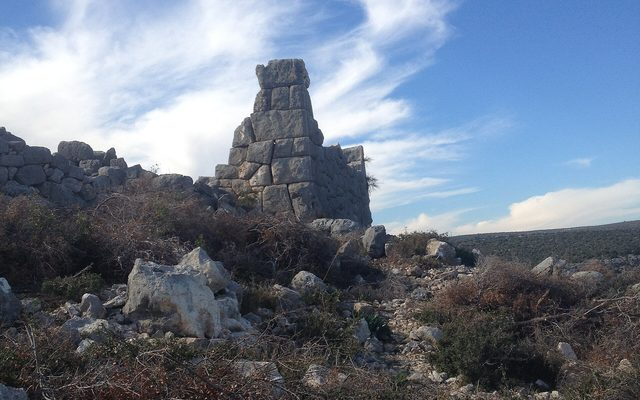
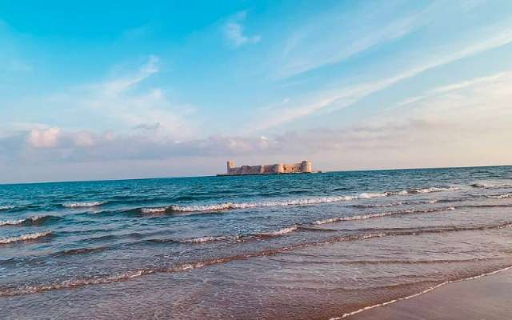

Ana sayfa › İl il gezilecek yerler › Mersin
Mersin'de Kültür Varlıkları rehberinde 44 yer var: 23 ören yeri, 10 müze, 7 kale & tarihi yapı, 2 dini yapı, 2 doğal alan. Aşağıda öne çıkanları, haritayı ve tüm yerlerin listesini bulabilirsiniz.
⭐ Öne çıkanlar

1 · Mersin · Ören YeriAdamkayalar
Adamkayalar, Silifke–Erdemli arasında Şeytan Deresi kanyonunun dik kayalıklarına oyulmuş, Roma dönemine ait bir grup insan kabartmasıdır.

2 · Mersin · Ören YeriAkkale Ören Yeri
Akkale, Erdemli'nin Kumkuyu beldesinde deniz kıyısında yer alan, Roma ve erken Bizans dönemine ait bir yapı topluluğunun halk arasındaki adıdır.

3 · Mersin · Ören YeriAnemurium Örenyeri
Anemurion, Anadolu'nun en güney ucunda, Anamur Burnu'nda, denizle dağların arasına kurulmuş antik bir kenttir.
🗺 Haritada
📍 Tüm yerler (44)
Ören Yeri (23)
AdamkayalarÖren YeriAkkale Ören YeriÖren YeriAnemurium ÖrenyeriÖren Yeri Elaiussa Sebaste Antik KentiÖren Yeri
Elaiussa Sebaste Antik KentiÖren Yeri Gökkale Ören YeriÖren Yeri
Gökkale Ören YeriÖren Yeri Kanlı Divane ÖrenyeriÖren Yeri
Kanlı Divane ÖrenyeriÖren Yeri Kanlıdivane (Kanytelis)Ören Yeri
Kanlıdivane (Kanytelis)Ören Yeri Karakabaklı Antik YerleşimiÖren Yeri
Karakabaklı Antik YerleşimiÖren Yeri Kelenderis Antik KentiÖren Yeri
Kelenderis Antik KentiÖren Yeri Mezgitkale Mezar AnıtıÖren Yeri
Mezgitkale Mezar AnıtıÖren Yeri Olba Antik KentiÖren Yeri
Olba Antik KentiÖren Yeri Silifke Ayatekla ÖrenyeriÖren Yeri
Silifke Ayatekla ÖrenyeriÖren Yeri Soli Pompeiopolis Antik KentiÖren Yeri
Soli Pompeiopolis Antik KentiÖren Yeri Tapureli Antik KentiÖren Yeri
Tapureli Antik KentiÖren Yeri Tarsus Antik Roma YoluÖren Yeri
Tarsus Antik Roma YoluÖren Yeri Tarsus GözlükuleÖren Yeri
Tarsus GözlükuleÖren Yeri Tarsus Kleopatra Kapısı ve Antik YolÖren Yeri
Tarsus Kleopatra Kapısı ve Antik YolÖren Yeri Uzuncaburç ÖrenyeriÖren Yeri
Uzuncaburç ÖrenyeriÖren Yeri Yanıkhan Ören YeriÖren Yeri
Yanıkhan Ören YeriÖren Yeri Yumuktepe HöyüğüÖren Yeri
Yumuktepe HöyüğüÖren Yeri Çatıören Antik YerleşimiÖren Yeri
Çatıören Antik YerleşimiÖren Yeri Öküzlü Ören YeriÖren Yeri
Öküzlü Ören YeriÖren Yeri Üçayaklı Villa RustikaÖren Yeri
Üçayaklı Villa RustikaÖren Yeri
Akkale Ören YeriÖren YeriAnemurium ÖrenyeriÖren YeriElaiussa Sebaste Antik KentiÖren YeriGökkale Ören YeriÖren YeriKanlı Divane ÖrenyeriÖren YeriKanlıdivane (Kanytelis)Ören YeriKarakabaklı Antik YerleşimiÖren YeriKelenderis Antik KentiÖren YeriMezgitkale Mezar AnıtıÖren YeriOlba Antik KentiÖren YeriSilifke Ayatekla ÖrenyeriÖren YeriSoli Pompeiopolis Antik KentiÖren YeriTapureli Antik KentiÖren YeriTarsus Antik Roma YoluÖren YeriTarsus GözlükuleÖren YeriTarsus Kleopatra Kapısı ve Antik YolÖren YeriUzuncaburç ÖrenyeriÖren YeriYanıkhan Ören YeriÖren YeriYumuktepe HöyüğüÖren YeriÇatıören Antik YerleşimiÖren YeriÖküzlü Ören YeriÖren YeriÜçayaklı Villa RustikaÖren YeriMüze (10)
 Mersin Atatürk Evi MüzesiMüze
Mersin Atatürk Evi MüzesiMüze Mersin MüzesiMüze
Mersin MüzesiMüze Silifke Atatürk Evi ve Etnografya MüzesiMüze
Silifke Atatürk Evi ve Etnografya MüzesiMüze Silifke MüzesiMüze
Silifke MüzesiMüze Silifke Narlıkuyu Mozaik MüzesiMüze
Silifke Narlıkuyu Mozaik MüzesiMüze Tarsus St. Paul Anıt MüzesiMüze
Tarsus St. Paul Anıt MüzesiMüze Taşucu Aslan Eyce Amfora MüzesiMüze
Taşucu Aslan Eyce Amfora MüzesiMüze Taşucu Atatürk EviMüzeAnamur MüzesiMüzeMersin Tarsus MüzesiMüze
Taşucu Atatürk EviMüzeAnamur MüzesiMüzeMersin Tarsus MüzesiMüzeKale & Tarihi Yapı (7)
 Gözne KalesiKale & Tarihi Yapı
Gözne KalesiKale & Tarihi Yapı Korykos ve KızkalesiKale & Tarihi Yapı
Korykos ve KızkalesiKale & Tarihi Yapı Mamure KalesiKale & Tarihi Yapı
Mamure KalesiKale & Tarihi Yapı
Mersin Kız KalesiKale & Tarihi Yapı Namrun KalesiKale & Tarihi Yapı
Namrun KalesiKale & Tarihi Yapı Silifke KalesiKale & Tarihi Yapı
Silifke KalesiKale & Tarihi Yapı Softa KalesiKale & Tarihi Yapı
Softa KalesiKale & Tarihi YapıDini Yapı (2)


Doğal Alan (2)


🧭 Bu ili içeren rotalar
🏺 İlgili uygarlık rehberleri
👩🏫 Öğretmenler için
📄 Benim ilim: Mersin🚌 Bu ile okul gezisi planlaEtkinlik kâğıtları ▸